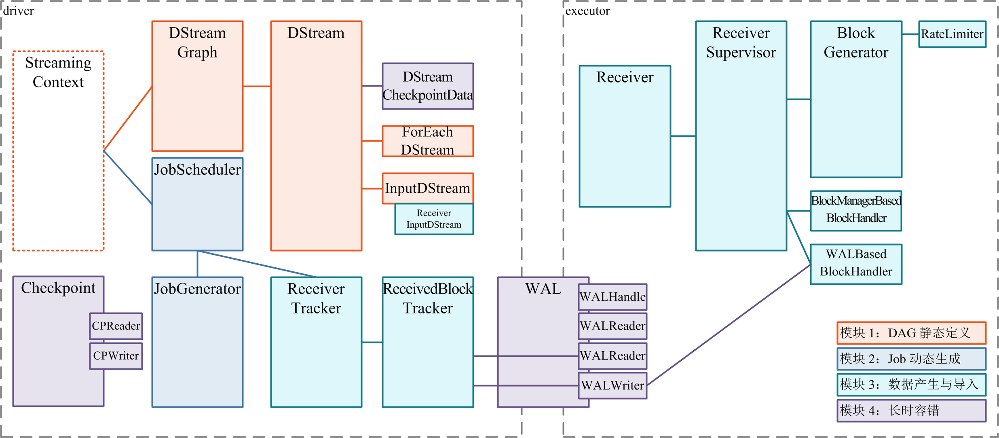

Spark源码阅读之——StreamingContext详解
Spark Streaming 源码解析系列很好地解析了Spark Streaming框架的源码，遗留了一点关于StreamingContext的解析，我基于自己的理解，简要阐述如下：
|
|
阅读本文前，请一定先阅读 Spark Streaming 实现思路与模块概述 一文，其中概述了 Spark Streaming 的 4 大模块的基本作用，有了全局概念后再看本文对 StreamingContext 细节的解释。
引言

如各个模块的架构图所示，StreamingContext 是 Spark Streaming 提供给用户 code 的、与前述 4 个模块交互的一个简单和统一的入口，是Spark Streaming程序与Spark Core的连接器，下面我们用这段11行的完整 quick example，来说明用户 code 是怎么通过 StreamingContext 与前面几个模块进行交互的：
|
|
从上述样例程序可知，程序的前两行创建了一个新的 StreamingContext，第三行通过 ssc.socketTextStream通过ssc暴露的方法创建了一个ReceiverInputDStream，接着基于DStream的各种方法对数据进行了操作，最后通过 ssc.start 方法启动了Spark Streaming 程序，最后一句ssc.awaitTermination()将用户 code 主线程 block 住，由后台的 JobScheduler 线程周而复始的产生一个一个 batch 而不停息地处理，除非发生异常。
我们可以发现，StreamingContext主要包含以下内容：
- StreamingContext的创建(构造函数)
- StreamingContext的初始化(成员)
- StreamingContext的状态控制(函数)
StreamingContext的创建
首先我们来看StreamingContext的构造函数，主要由三个参数，分别是：
- SparkContext：SparkStreaming的最终处理是交给SparkContext的；
- Checkpoint：检查点，用于错误恢复；
- Duration：设定Streaming每个批次的积累时间。
|
|
StreamingContext 有以下几种不同的创建方式：
|
|
整理上述的文件创建过程，可以看出，StreamingContext的创建是一定要包含SparkContext的，同理也可以推出，Spark Streaming最终实际是交给SparkContext来处理的，Spark Streaming更像是Spark Core的一个应用程序。StreamingContext的创建主要分为两类：
- 1: 通过SparkContext建立新的StreamingContext，需要指定
batchDuration时间； - 2: 从checkpoint文件中读取的Checkpoint对象中创建StreamingContext，用于异常情况下的恢复，
batchDuration在Checkpoint中已经保存，所以可以不用显示指定。
所以说，要构建StreamingContext，就必须要以上两者至少选一，下面的代码也说明了这点：
|
|
注意：由于SparkStreaming至少需要一个线程来接收数据，所以local与local[1]模式下是不可以启动的。
StreamingContext的初始化
StreamingContext在创建后会进行一些初始化（静态定义）的工作，定义一些静态的数据结构，由图可知，StreamingContext主要持有 DStreamGraph 与 JobScheduler 的对象：
如下是graph的初始化定义代码，如果之前存在 Checkpoint ，则graph从 Checkpoint 得到，否则创建一个新的graph
如下是初始化jobScheduler的代码：
除了上述两个主要成员，StreamingContext还包含以下成员：
- ContextWaiter：用于等待任务执行结束；
- StreamingJobProgressListener：用于监听StreamingJob，用以更新StreamingTab的显示；
- StreamingTab：用于生成SparkUI中Streaming那一页标签；
- StreamingSource： 流式计算的测量数据源metrics。
除了定义上述成员，StreamingContext还进行了Checkpoint,创建了Checkpoint目录：
|
|
checkpoint方法如下：
StreamingContext的控制
StreamingContext作为控制面板，给用户提供了许多控制方法，就像控制面板上的按钮，让我们来开发spark Streaming程序，主要有以下方法：
- sparkContext： 获得ssc所属的SparkContext
- remember(duration: Duration)：通过设置
graph.remember(duration)来设置rememberDuration
简单解释一下rememberDuration，Spark Streaming 会在每个Batch任务结束时进行一次清理动作clearMetadata，每个DStream 都会被扫描，先清理输出Dstream，接着清理输入DStream，清理的时候，根据rememberDuration来计算出oldRDD然后清理。rememberDuration 有默认值，大体是slideDuration，也就是DStream生成RDD的时间间隔，如果设置了checkpointDuration 则是2*checkpointDuration，手动指定的值要大于默认值才会生效。
接下来是定义一些定义输入流的方法，主要有：
- receiverStreamT: ClassTag：创建一个用户自定义的Receiver；
- socketTextStream：创建TCP socketReceiver，默认是utf-8的文本格式，以’\n’分隔；
- socketStream：创建TCP socketReceiver，用户提供自己的转化函数；
- rawSocketStream：创建SocketReceiver，相比上着，没有中间的解码转化所以比较高效；
- fileStream：创建监控HDFS目录的InputDStream，通过检测文件的修改时间来判断是否是新文件；
- binaryRecordsStream：创建二进制文件的监听InputDStream，使用了fileStream方法；
- queueStream：创建一个RDD队列流，底层调用了UnionRDD的方法将这些RDD转化为一个RDD，开启oneAtATime参数则每个RDD只取一个值，可以用于调试和测试；
在InputDStream的构造过程中，会将此输入流InputDStream添加到DStreamGraph的inputStreams数据结构中，
还定义了一些DStream的其它方法：
- union： 多个DStreams合成一个DStream，底层调用了ssc.sc.union(rdds)；
- transform： 根据自定义的transformFunc生成新的DStream；
- addStreamingListener： 在listenerBus上增加一个StreamingListener对象，供JobScheduler的StreamingListenerBus对象监听输入流的ReceiverRateController对象；
还定义了一些控制启动与关闭的方法：
- start：启动StreamingContext。
StreamingContext的start方法启动过程中，会判断StreamingContext的状态，它有三个状态INITIALIZED、ACTIVE、STOP。只有状态为INITAILIZED才允许启动，主要有以下步骤：
- 验证graph是否有效；
- 设置Checkpoint；
- 使用新的线程异步启动 JobScheduler ，启动后将状态由初始化状态INITIALIZED改为ACTIVE状态，JobScheduler的启动请见JobGenerator 详解；
- 同时添加Streaming的shutdownHookRef，用于程序的异常终止，StreamingContext的shutdownHook优先级比SparkContext的值大1；
- 往metricsSystem中注册streamingSource测量数据源；
- 添加生成SparkUI中Streaming相关标签
- awaitTermination：等待Streaming程序的停止；
- stop：停止SparkStreaming程序，其中可以传入参数以表示是否同时停止相关的SparkContext，默认为true(这个参数在文件名流转化为数据流的时候应该设置为false，通过spark.streaming.stopSparkContextByDefault来设置);还有一个参数是是否优雅地停止(等待其它已经接收到的数据处理完毕再停止)；
引用
http://lqding.blog.51cto.com/9123978/1771017
https://github.com/lw-lin/CoolplaySpark/tree/master/Spark%20Streaming%20%E6%BA%90%E7%A0%81%E8%A7%A3%E6%9E%90%E7%B3%BB%E5%88%97
http://lqding.blog.51cto.com/9123978/1773912